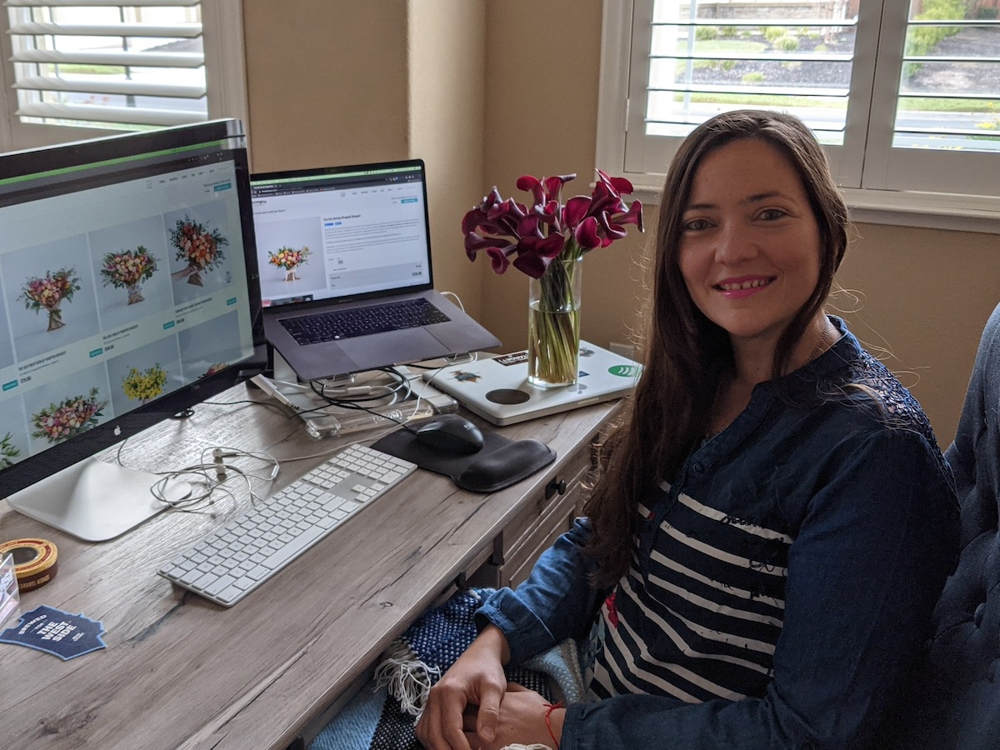

Paula Alvarez Barreiro
U.S. Citizen
Project Manager
About
Paula is a Skilled Certified Professional Project Manager, with Product Manager and Scrum Master experience for more than 8 years that builds and motivates high-performing teams. Over 15 years of experience in e-commerce and SaaS companies, working with different Methodologies, lifecycles and processes from Web-Development to Manufacturing.
Has coordinated efforts across multidisciplinary teams for large-scale initiatives with high revenue impact by enhancing processes and serving as servant leader. She is skilled in tailoring processes to optimize business impact and customer experience.
Is a fast learner, passionate about technology, hard-worker, self-taught and with soft skills that she has been improving and leveraging based on the necessities of her professional career.

Project and Product Management
- Birthday: Dec 11th 1985
- Phone: +1-925-354-9211
- Location: Bay Area, California, USA
- Languages:
- English: Bilingual Proficiency
- Spanish: Native Proficiency
- German: Elementary Proficiency
- Email: palvarezbarreir@gmail.com
- Disposition: Remote and On-Site
- Certifications:
Projects per Year
Capacity planning, resources and budget forecasts, accounting for ~40M dollars per year.
~10M budget
PM for Site rebranding project, 18 month duration, Managing 30+ team members.
Reducing 60% of time from manual processes
Implementing an Inventory tracking system, based on Excel, PowerBI and Snowflake, automating reports generation and increasing accuracy.
Engneering Manager
Multi-diciplinary Team, composed of 13 Engineers, working remotely from locations like, US, Latin America and Europe.
Skills
- Leadership and Organizational Development
- Project, Program & Product Management
- Strategic Planning, Development, Tracking & Execution
- Risk, Cost and Procurement Management
- Conflict Management
- Software Development Lifecycle
- Root Cause Analysis
- Cost Reduction and Containment
- Agile, Waterfall and Hybrid Methodologies
- Scrum Master
- Cross-Functional Collaboration
- Processes, Procedures and Regulations Control
- Functional & Business Requirements
- Software Development Lifecycle
- Testing and Conversion Plans
- Quality & Release Management
- Forecasting & Budget Administration
- Data Analysis and Review
- Disaster Recovery Methodologies
- Emotional Intelligence
- Team Productivity Improvement
- Performance Evaluations
- Communications Management
- Analytical Skills
- Attention to Detail
- Storytelling
- Problem Solving
- Systems Design Documentation
- Technical Support
Resume
Results-driven Head of Engineering with extensive experience in Project Management, Agile Methodologies, and Strategic Thinking.
Proven track record of overseeing complex initiatives, building and managing high-performing engineering teams, root cause analysis, regulatory compliance, research, and implementing effective processes for successful project execution.
Adept at stakeholder management, risk mitigation, and quality assurance.
Professional Experience
Program Manager - PMO
Aug 2024 - Present
PanPalz.com - US - Remote
- Lead in the design, development, and implementation of the graphic, layout, and production communication materials
- Delegate tasks to the 7 members of the design team and provide counsel on all aspects of the project.
- Supervise the assessment of all graphic materials in order to ensure quality and accuracy of the design
- Oversee the efficient use of production project budgets ranging from $2,000 - $25,000
Project Manager
Jun 2024 - Sep 2024
PanPalz.com - US - Remote
- Helping the world’s first nonprofit social media designed to redefine the way we connect through deeply meaningful conversations.
- Work very closely with several teams, helped them achieve the best outcome to achieve great projects for this amazing company!
Project Manager and Engineer Manager
Jul 2020 - Present
Farmgirl Flowers - US - Remote
- Implemented Agile methodologies, enabling improved planning and alignment with OKRs and roadmaps.
- Introduced Atlassian Jira for task tracking, consolidated documentation in Notion, and improved observability with DataDog.
- Managed AWS infrastructure migrations, including Route 53, S3 Buckets, and VPN/VPC implementations.
- Leading multiple initiatives that require deep understanding on how the business operates, how the infrastructure provides solutions for their needs.
- Coordinating and overseeing how to effectively deliver solutions on time from different Engineering areas.
- Serve as a servant leader by facilitating problem-solving, decision-making processes, fostering collaboration, and empowering team members to contribute their expertise and insights, thereby cultivating a supportive and innovative project environment.
- Recruited, placed and oversaw project staff for optimal project results.
- Manage projects schedule, budget and procurement to ensure the right prioritization and timely delivery, cost-effectiveness, and optimal utilization of resources, thereby maximizing project efficiency and achieving organizational objectives.
- Lead Processes decisions and implementations, tailoring them based on the needs of each project.
- Implemented quality control standards for consistent approach and results.
- Oversaw more than 120 projects to support teams, report progress, and influence positive outcomes for key stakeholders.
- Monitored contracts and service level agreements to identify potential risks and implement mitigation actions to protect development process from unforeseen delays and costs.
- Evaluated project requirements to identify and mitigate risks.
- Reviewed contractor proposals to determine favorable partnerships for on-time and under-budget project completion.
- Provide technical guidance, peer review and mentorship to junior engineers engaged in building system designs.
System Administator
Jan 2017 - Jul 2020
Groupon Inc. - US - Santa Clara - Remote
- Workflow management
- Implementing Servers Configurations
- Implementing SOX rules
- GDPR and SOX Compliance Audits
- User access support, Troubleshooting of SSH access keys, Github access. Services configuration. Bug *Fixing and Provisioning support. Access Control Management
Users Management
- Troubleshooting of Automatic OnBoarding Process.
- Supporting Offboarding Processes
- New projects creation, Management of customized workflows, fields, screens, etc.
- Global Roles Management, consistency with Management requirements.
- Templates Management with Deviniti Integration
- Users access
- Spaces, users and permissions Management
- ~50 Active Organizations with more than 20 Repositories each
- Organizations Management of Github Internal Platform
- Global Users Management
- Manage and Audit SOX In-Scope Organizations - ~60 Repositories
- Custom Configuration for SOX Repositories
- GIT Troubleshooting
- Leader and Coordinator of Volunteering Activities in the Bay Area for Groupon.
- Organization of Groupon Santa Clara events, planning, design, budget, coordination, and rollout.
Security and Compliance - SOX and GDPR
Production Environment
Atlassian JIRA Administrator - ~700 Active Projects
Atlassian Confluence Administrator
Github Administrator - ~50 Active Organizations
Bay Area volunteering Leader
Groupon’s Culture Club Co-chair
Certifications
PMI-PMP Project Management Professional
March 2024
Project Management Institute - PMP® Number:3793009
- Benefit Analysis
- Communications Management
- Human Resource Management
- PMP
- Project Assessment
- Project Management
- Project Management Professional
- Project Plan
- Quality Assurance
- Quality Management
- Risk Management
- Scope Management
PMI-CAPM Certified Associate Project Management
October 2023
Project Management Institute - CAPM® Number: 3659694
- Project Management
- Agile Project Management
- Project Documentation
- Problem Solving
- Stakeholder Management
- Business Analyst
Google Project Management
June 2023
Coursera and Google Careers Certificates - Id: HH9GYYKFBBYS
- Project Management
- Agile Project Management
- Scrum
- Project Documentation
- Problem Solving
- Stakeholder Management
SCRUM Master Certification
Feb 2024
Coursera and University Of Alberta - Id: UGGSZM7SDJCJ
- Project Management
- Product Management
- Software Product Management
- Agile Methodology
- Software Requirements
- SCRUM
- Software Engineering
- Design and Product
- Leadership and Management
- Project Management
- Planning
- Entrepreneurship
- Strategy and Operations
- Business Analysis
- Collaboration
- User Experience
- Supply Chain and Logistics
Atlassian Agile Project Management Professional Certificate
July 2024
LinkedIn Learning and Atlassian - Certificate
- Project Management
- Jira, Agile Project Management
- Agile Methodologies
Education
Universidad Tecnológica Nacional (UTN)
January 2005 - January 2012
Mendoza, Argentina.
Recommendations
Certifications
- All
- Project Management
- DevOPs
{kind=link}
{kind=link}
{kind=link}
{kind=link}
{kind=link}
{kind=link}